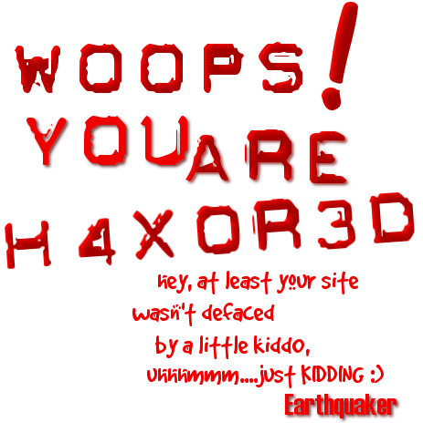

Here's a security tips for you, the webmaster and especially the server admin!
Don't use important passwords for relatively unimportant (or unsecure) services on the web.
And if you run CGI services make sure you always get the latest versions, the old one's are full of security holes.
Contact me : anonymous_lamer@fuckyou.co.ukWe're still friends, okay?!
Go to the original site:Greetz go out to :
Code Hunterz (You know who you are), DHC(Dutch Hackers 0wn), Attrition(For the mirroring), Packetstorm and all my Friends.I'll be watching you :P
Earthquaker